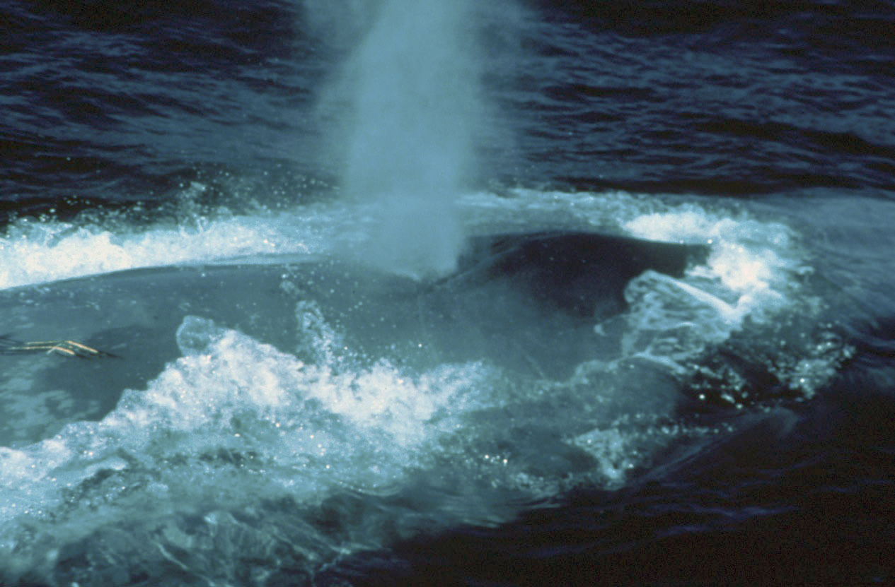

Опис
У синього кита величезне, струнке і витягнуте тіло завдовжки 21—27 м вага від 84 т і більше в
дорослої
особини.
Голова зверху широка і рівна, V-подібна з дуже вигнутою в сторони нижньою щелепою. Збоку має
плаский вигляд. Дихало
помітно не
виступає. З кожного боку верхньої щелепи має чорні пластини (так званий «китовий вус»). Грудні плавники
вузькі та
загострені. Хвостове стебло широке із зазубленим краєм. Має 55—68 підщелепних горлових складок.
Тіло синювато-сіре із сірими плямами різної величини та форми. Голова і нижня щелепа темні, спина і боки
світліші.
Дихало смугача має два отвори, які можуть викидати повітря з легень разом з крапельками води та слизу на
висоту близько
9,1—12,2 метра. «Фонтан» синього кита на повітрі щільний (не розпорошений), формою нагадує витягнутий
вузький
конус, перекинутий верхом униз.
3 Підвиди китів
- Північний
- Південний
- Карликовий
-
виділяють четвертий підвид
- індійський синій кит
Спосіб життя
Мешкає переважно далеко від берегів. Невеликі скупчення іноді утворює в місцях концентрації планктону, зберігаючи при цьому характерні дрібні групи. Переміщається зі швидкістю 6—8 миль за годину, часто міняючи напрямок. Під час переслідування йде по прямій зі швидкістю до 15 миль за годину, даючи невеликі фонтани кожні 30—40 с. У спокійному стані тримається під водою 10—12 хвилин. Після глибокого занурення на поверхні з'являється зазвичай верхівка голови з дихальцем. Викинувши фонтан води, синій кит поволі й плавно згинає широку спину. Мініатюрний спинний плавник з'являється, коли голова і передня частина спини вже ховаються під водою. Кит інколи виставляє хвостовий плавник у формі півкола. У популяції китів у Північній Атлантиці зафіксована гібридизація з фінвалами з народженням гібридів, здатних давати потомство. Внаслідок цього близько 3,5 відсотків генетичних послідовностей у популяції походять від фінвалів[13].
ВверхПоширення
Зараз у північно-західній частині Тихого океану рідкісний. Може траплятися в Беринговому і Чукотському морях, у районі Командорських, Алеутських островів і Курильської гряди. Раніше в Беринговому морі був дуже поширений, траплявся в Анадирській затоці й заходив в Чукотському морі до мису Серце-Камінь. В Японському морі відсутній. Також зменшення популяції пояснюється тим, що кити посилають сигнали, що дають їм знати куди плисти. Якщо сигнал повертається назад, кит пливе в іншому напрямку. Якщо ж сигнал не повертається, кит дотримується вказаного напрямку. Тому часто трапляється таке, що кити врізаються у пологі береги островів і материків.
Вверх